Used Car Price Prediction
This project utilizes machine learning techniques to predict the prices of used cars. The implementation combines robust preprocessing, modeling with Random Forest Regressor, Linear Regression, Gradient Boosting, and an interactive PyQt application for user engagement.
Introduction
According to a report by McKinsey & Company, the digital revolution is transforming the used-car retailing industry by focusing on enhancing the customer experience. Online platforms are challenging traditional used-car dealers by empowering customers with complete end-to-end purchasing options, extensive vehicle data and photos, and unique delivery methods. The report reveals that the used-car market in the United States is more than twice the size of the new-car market, with 39.4 million used cars sold annually compared to 17.3 million new cars. Moreover, the used-car market is less volatile and provides a safer investment during economic downturns, making it an attractive segment for both consumers and businesses. For more insights into the factors driving buyer preferences, refer to Auto Remarketing.
To make machine learning technology accessible and user-friendly for the used-car market, integrating predictive models into interactive applications is essential. PyQt, a set of Python bindings for the Qt application framework, enables the development of cross-platform graphical user interfaces (GUIs). By leveraging PyQt, this project creates an interactive application that allows users to input specific car details and receive immediate price predictions, thereby streamlining the valuation process. Using the "Used Car Auction Prices" dataset, we aim to identify the most important features influencing used-car pricing at auctions. A survey by CarStory found that the key features online shoppers prioritize include vehicle condition, accident history, service history, listing price, value, make, and mileage. These insights align with our dataset, and by applying machine learning, we aim to provide valuable insights into the factors driving used-car pricing, supporting both buyers and sellers in this growing market.
Dataset and Preprocessing
Accurate prediction of used car prices relies heavily on the quality and preparation of the dataset. In this work, we utilized the "Used Car Auction Prices" dataset sourced from Kaggle, which contains comprehensive information about cars sold at auctions, including their specifications, conditions, and selling prices. This section provides a detailed overview of the dataset, preprocessing techniques, and the transformations applied to prepare the data for machine learning models.
Dataset Description
The dataset comprises 558,811 rows and 16 columns, capturing detailed information about each vehicle. Key features in the dataset include:
- Year: The manufacturing year of the vehicle.
- Make: The manufacturer of the vehicle (e.g., BMW, Toyota).
- Model: The specific model of the vehicle (e.g., 3 Series, Corolla).
- Transmission: The type of transmission (manual or automatic).
- Condition: A numerical value (1.0 to 5.0) representing the car's condition.
- Odometer: The distance the vehicle has traveled, measured in miles.
- Body: The body style of the vehicle (e.g., sedan, SUV).
- State: The U.S. state where the car was sold.
- Color: The exterior color of the car.
- Interior: The interior color of the car.
- Selling Price: The final selling price of the vehicle, the target variable for our prediction.
Dataset Statistics Before Preprocessing
Before any preprocessing, the dataset had several issues, including missing values, irrelevant columns, and skewed distributions.
Table 1: Dataset Statistics Before Preprocessing
| Feature |
Data Type |
Missing Values |
Example Values |
| Year |
Integer |
0 |
2014, 2015 |
| Make |
Categorical |
10,301 |
BMW, Kia |
| Model |
Categorical |
10,399 |
3 Series, Sorento |
| Transmission |
Categorical |
65,353 |
Manual, Automatic |
| Condition |
Float |
11,794 |
3.6, 4.1 |
| Odometer |
Float |
94 |
12,000, 50,000 |
| Body |
Categorical |
13,195 |
Sedan, SUV |
| State |
Categorical |
0 |
CA, TX |
| Color |
Categorical |
749 |
White, Black |
| Selling Price |
Float |
0 |
15,000, 25,000 |
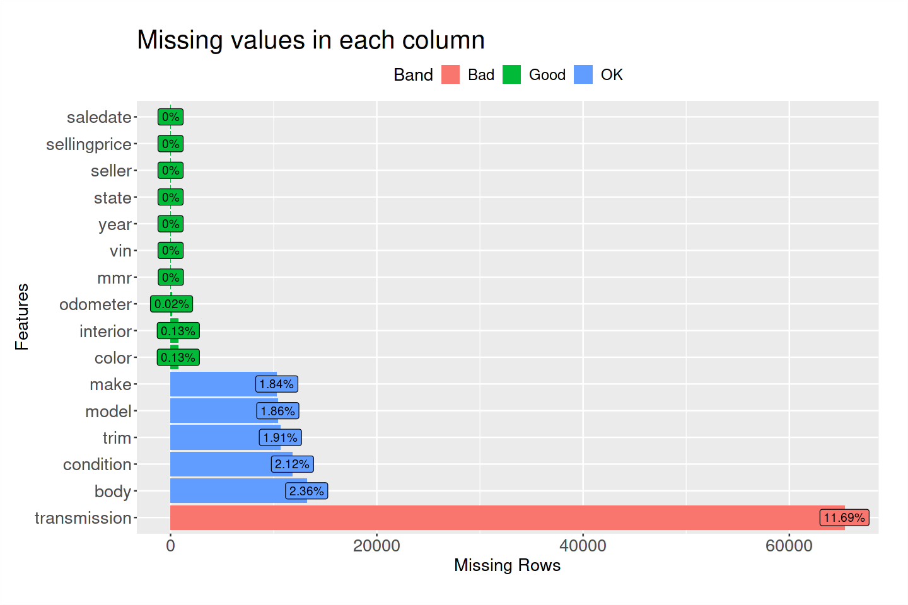
Preprocessing Steps
To prepare the dataset for modeling, the following preprocessing steps were performed:
- Handling Missing Values: Rows with missing values in critical columns such as Make, Model, Transmission, Condition, Odometer, and Body were dropped. This step reduced the dataset to 472,336 rows, ensuring that all remaining records had complete information.
- Dropping Irrelevant Columns: Columns that were deemed irrelevant to price prediction were removed, including:
- vin: A unique identifier for each car, not related to pricing.
- saledate: The date of sale, which does not directly influence the price.
- seller: The seller's name, which is not significant for prediction.
- Standardizing Categorical Values: All string values were converted to lowercase to ensure consistency (e.g., "SUV" and "suv" were standardized to "suv"). Transmission types were encoded numerically, where 0 represented manual and 1 represented automatic.
- Encoding Categorical Variables: Label encoding was applied to categorical variables (Make, Model, Body, etc.) to convert them into numerical values suitable for machine learning algorithms.
- Log Transformation: The target variable, Selling Price, exhibited significant skewness. A log transformation was applied to normalize the distribution, making it more suitable for regression tasks.
Dataset Statistics After Preprocessing
Table 2: Dataset Statistics After Preprocessing
| Feature |
Data Type |
Missing Values |
Unique Values (Encoded) |
| Year |
Integer |
0 |
25 |
| Make |
Integer |
0 |
85 |
| Model |
Integer |
0 |
637 |
| Transmission |
Integer |
0 |
2 |
| Condition |
Float |
0 |
41 |
| Odometer |
Float |
0 |
Continuous |
| Body |
Integer |
0 |
45 |
| State |
Integer |
0 |
50 |
| Color |
Integer |
0 |
30 |
| Selling Price |
Float |
0 |
Continuous |
The distribution of selling prices before and after log transformation is depicted in the following histograms:
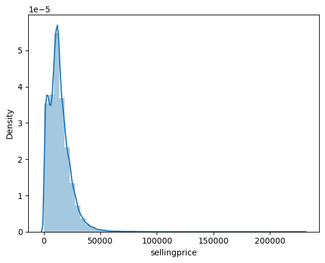
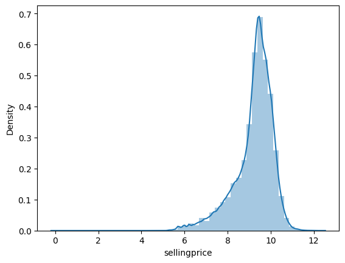
Figure: Original (left) and log-transformed (right) distributions of selling prices.
Exploratory Data Analysis
Exploratory Data Analysis (EDA) is a crucial step in understanding the dataset and identifying patterns and relationships between features. This section highlights insights gained from the dataset, including feature correlations, distributions, and trends. Visualizations such as histograms, scatterplots, and heatmaps are used to aid the analysis.
Correlation Analysis and Heatmap
Understanding the relationships between features and the target variable (Selling Price) is essential for building an effective predictive model. The correlation matrix reveals the degree of linear association between numerical features.
Key Observations from Correlation Analysis:
- Year (r=0.78): Newer vehicles tend to have higher selling prices.
- Condition (r=0.62): Vehicles in better condition command higher prices.
- Odometer (r=-0.72): Vehicles with higher mileage generally sell for less.
- Features like Transmission (r=0.07) and Body (r=-0.07) have weaker correlations but still provide useful categorical distinctions.
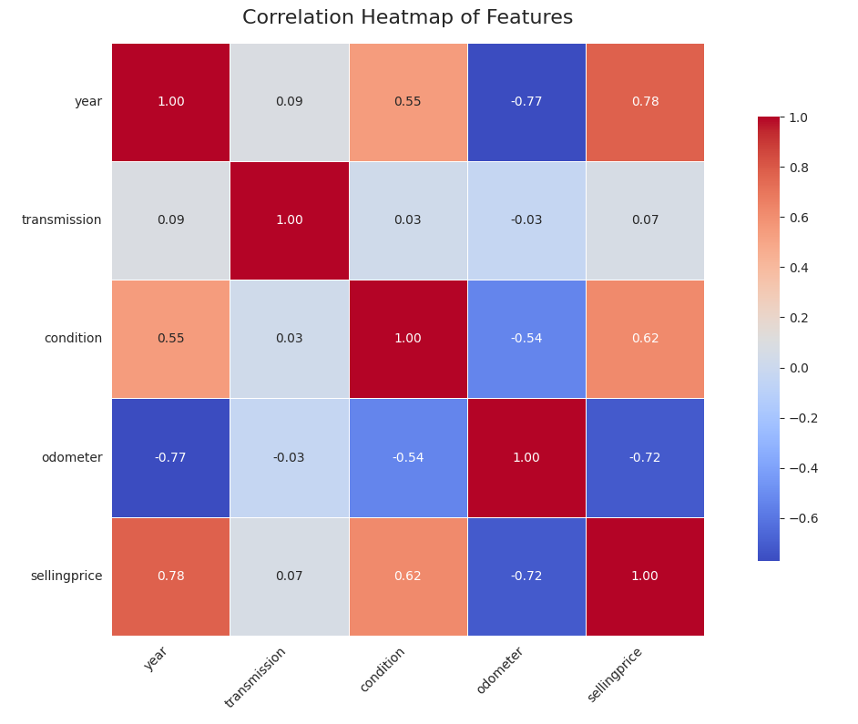
Distribution of Key Features
Analyzing the distribution of key features helps to understand their range, central tendencies, and potential skewness.
- Year: Vehicles manufactured between 2010 and 2015 dominate the dataset. Older cars (before 2000) are relatively rare and tend to have lower selling prices.
- Condition: The condition of vehicles is concentrated between 2.5 and 5.0, with few vehicles in poor condition (<2.0).
- Odometer: The majority of cars in the dataset have mileage between 10,000 and 100,000 miles. Higher mileage cars exhibit lower selling prices, highlighting the strong inverse correlation.
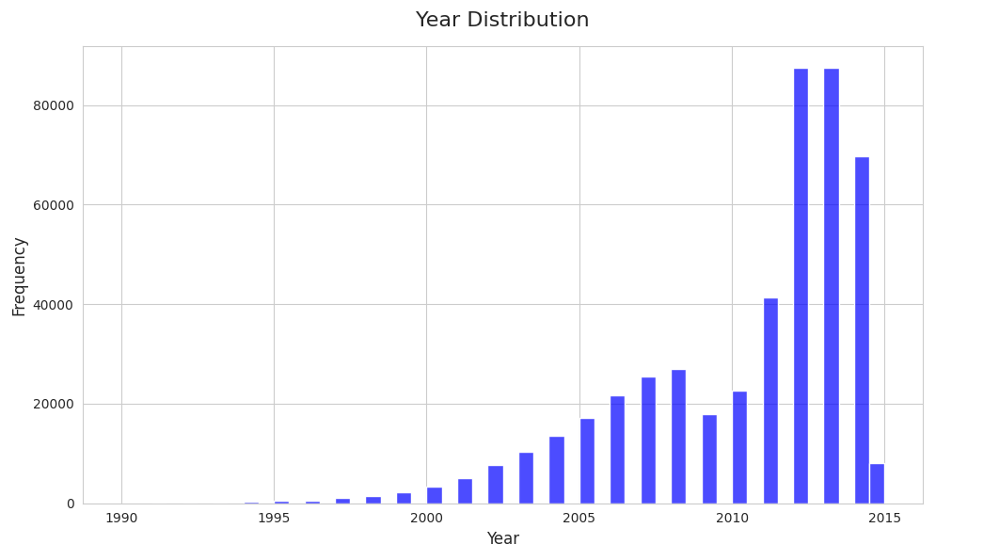
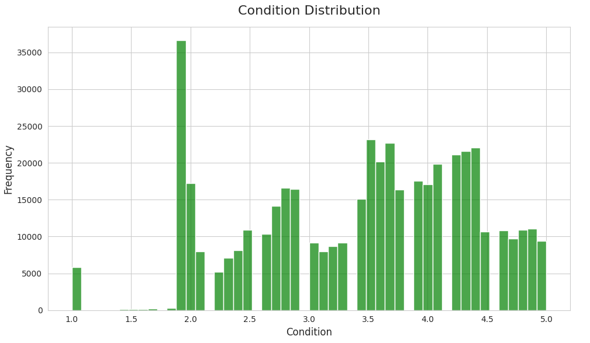
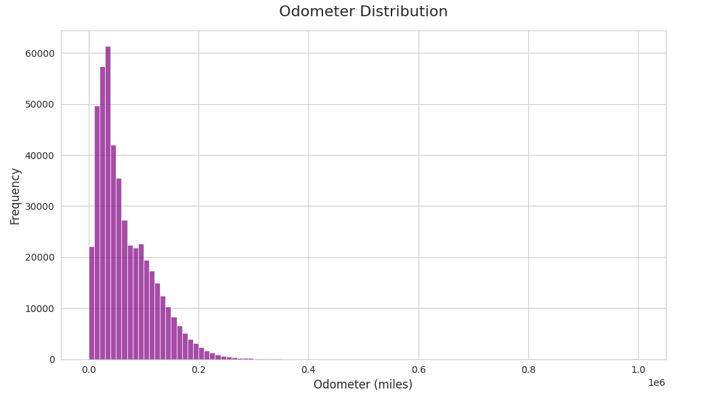
Relationships Between Features
- Selling Price vs. Odometer: Odometer or millage is one of the most important feature buyers would be interested in while buying a used car.
Generally the fewer km's on the odometer of a used car means a higher selling price. In some special circumstances however people may pay more / less regardless of the odometer reading. A scatterplot highlights the inverse relationship between mileage and selling price.
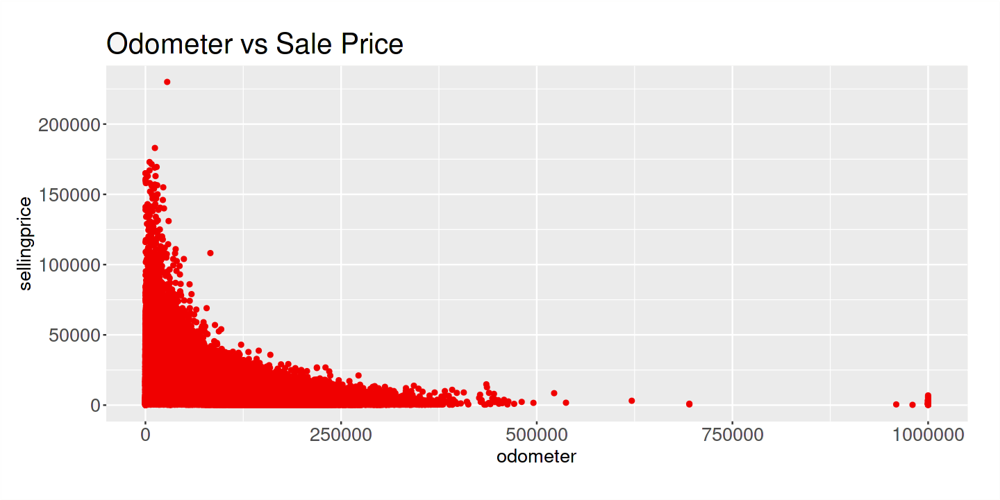
- Selling Price vs. Year: The model year of a car can also be a selling point. Latest car models can sale for higher price given the condition of the car is good.
We see from the graph below that on average the price increases as the model year get more recent.
We also see that cars of the early 80's sold for higher prices. These are possibly skewed average prices due to the presence of top brand cars.
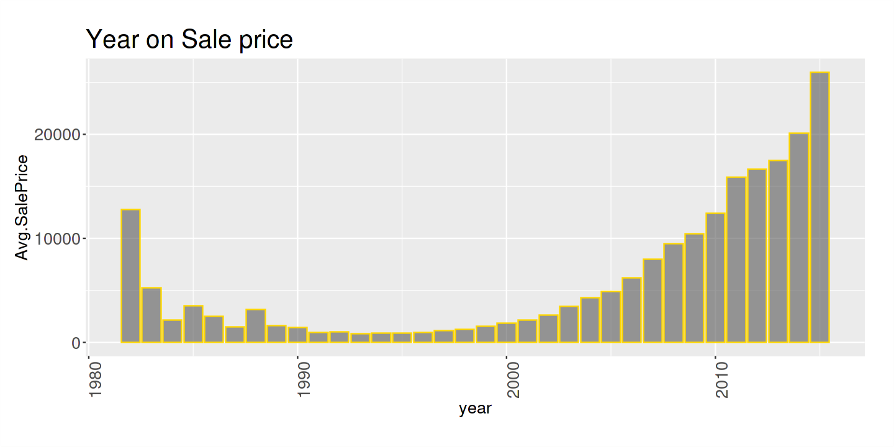
- Selling Price vs. Condition: Buyers of a used-car rightly put huge importance on the conditions of the car. No one would like to put more money in than the price of the car on maintenance and upgrade. So the state of the car is vital. A positive correlation is evident, with well-maintained cars in better condition achieving higher prices.
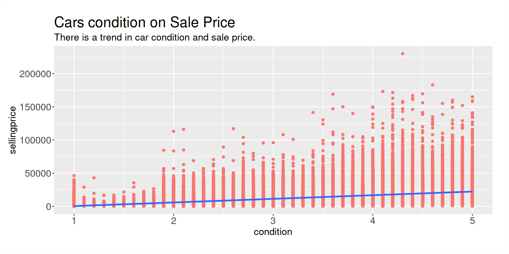
- Selling Price vs. MMR: MMR, which is short for the Manheim Market Report, is a specific report that's available to auto wholesalers.
MMR provides data about the wholesale prices of vehicles for the past 13 months. All of this data is generated by real vehicle sales at the Manheim auction houses found throughout the country.
Since MMR gathers data based on its own sales, it can be considered to be quite accurate. Every sale made at an auction house in the Manheim network is tracked, analyzed, and used when someone generates a report for the same vehicle.
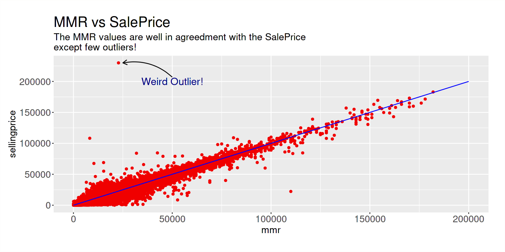
Model Training and Evaluation
In addition to the Random Forest Regressor, other models such as Linear Regression and Gradient Boosting Regressor were trained and evaluated for comparison. Each model was assessed based on its R² Score, Mean Absolute Error (MAE), and Root Mean Squared Error (RMSE) to understand its predictive performance.
The Linear Regression model served as a baseline for comparison due to its simplicity and ability to model linear relationships between features and the target variable.
While Linear Regression is computationally efficient, its inability to capture non-linear relationships limits its performance on this dataset.
The Gradient Boosting Regressor was used as a more sophisticated model capable of handling non-linear relationships. It performs well but is computationally intensive and slightly less accurate than Random Forest on this dataset.
Summary of Results
| Model |
R² Score |
MAE ($) |
RMSE ($) |
| Random Forest |
0.9584 |
39.65 |
61.24 |
| Linear Regression |
0.5278 |
158.70 |
206.33 |
| Gradient Boosting |
0.7903 |
97.88 |
137.49 |
Insights and Conclusions
- Random Forest: Outperformed other models with the highest R² Score and the lowest MAE and RMSE.
- Linear Regression: Struggled with the non-linear relationships in the data, resulting in lower accuracy and higher errors.
- Gradient Boosting: Achieved a balance between performance and flexibility, offering a viable alternative but still trailing behind Random Forest.
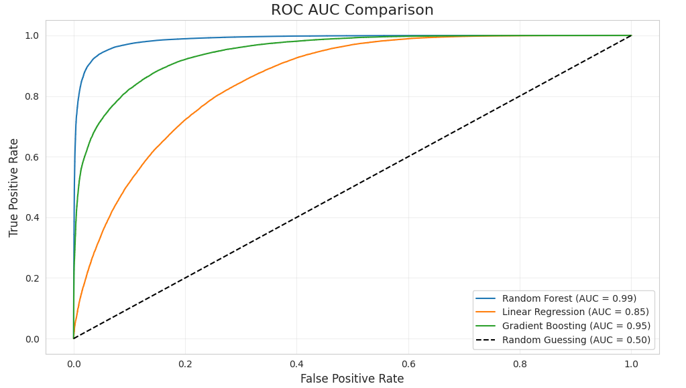
PyQt Application Overview
The PyQt application provides an intuitive and interactive way for users to predict used car prices based on specific vehicle details. It dynamically updates predictions and visualizations, making it both powerful and user-friendly.
- Tab 1: Provides input fields for selecting the car manufacturer, model, body type, and odometer reading.
- Tab 2: Additional inputs for condition, year, and transmission type (automatic/manual).
- Dynamic Graphs: Plots dynamically adjust to reflect the user's inputs, offering insights into trends affecting car pricing.
- Status Bar: Provides feedback, such as predicted prices or warnings for invalid inputs.
- Save Plot Feature: Users can save graphs for documentation or future reference.
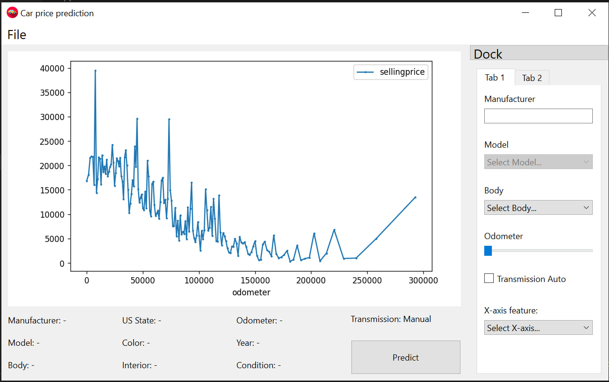
Application Implementation Details
The application leverages the PyQt6 framework for the graphical user interface and integrates a Random Forest Regressor for machine learning predictions. Key highlights include:
- Signal-Slot Mechanism: Ensures real-time updates when user inputs change.
- Dynamic Visualization: Matplotlib integration provides plots that adjust based on the selected x-axis feature and predicted prices.
- Model Integration: The pre-trained Random Forest model predicts prices based on encoded and transformed user inputs.
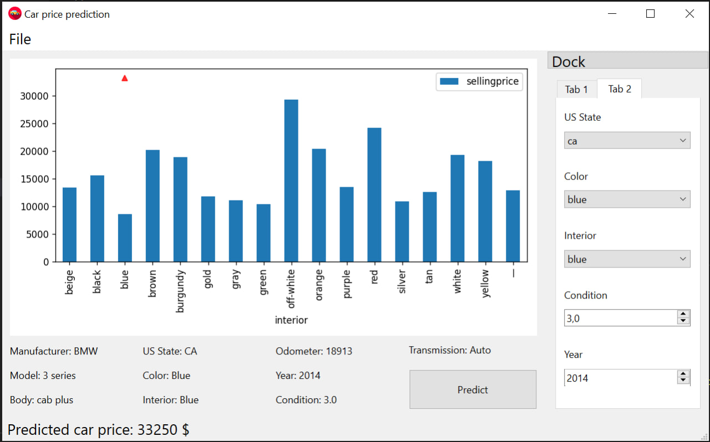
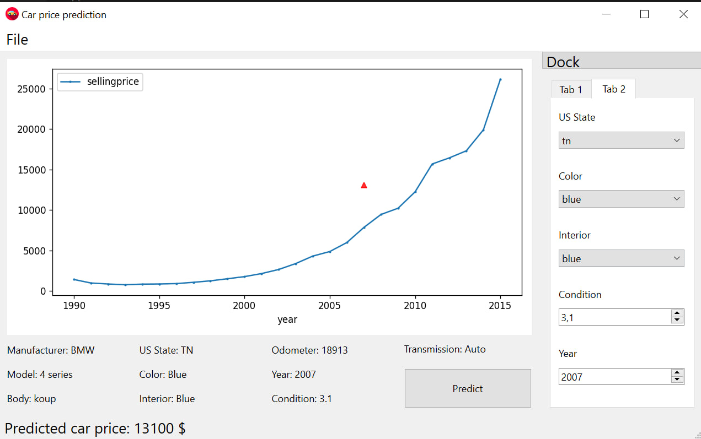
Conclusion
The Random Forest Regressor demonstrated outstanding predictive performance for used car price prediction, significantly outperforming the baseline Linear Regression model. Its ability to capture non-linear relationships and rank feature importance makes it a robust choice for this task. The integration of the model into an interactive PyQt application further enhances its accessibility and usability, providing a user-friendly and dynamic tool for predicting used car prices.
|